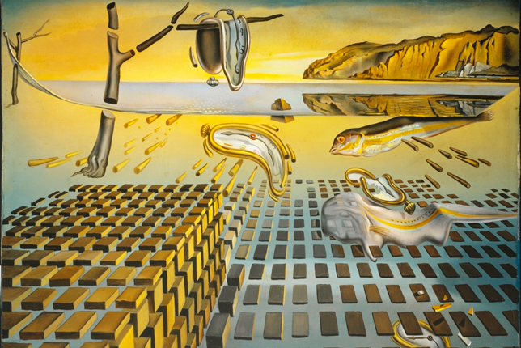

The Persistence of Memory (Spanish: La persistencia de la memoria) is a 1931 painting by artist Salvador Dalí and one of the most recognizable works of Surrealism. First shown at the Julien Levy Gallery in 1932, since 1934 the painting has been in the collection of the Museum of Modern Art (MoMA) in New York City, which received it from an anonymous donor. It is widely recognized and frequently referred to in popular culture, and sometimes referred to by more descriptive titles, such as "The Melting Clocks", "The Soft Watches" or "The Melting Watches".

- Artist: Salvador Dali
- Year: 1931
- Catalogue: 79018
- Medium: Oil on canvas
- Movement: Surrealism
- Dimensions: 24 cm x 33 cm (9.5 in x 13 in)
- Location: Museum of Modern Art, New York City
- Owner: Museum of Modern Art
Analysis
The well-known surrealist piece introduced the image of the soft melting pocket watch. It epitomizes Dalí's theory of "softness" and "hardness", which was central to his thinking at the time. As Dawn Adès wrote, "The soft watches are an unconscious symbol of the relativity of space and time, a Surrealist meditation on the collapse of our notions of a fixed cosmic order". This interpretation suggests that Dalí was incorporating an understanding of the world introduced by Albert Einstein's theory of special relativity. Asked by Ilya Prigogine whether this was the case, Dalí replied that the soft watches were not inspired by the theory of relativity, but by the surrealist perception of a Camembert melting in the sun. The year prior to painting the Persistence of Memory, Dali developed his "paranoiac-critical method," deliberately inducing psychotic hallucinations to inspire his art. He remarked, "The difference between a madman and me is that I am not mad." This quote highlights Dali's awareness of his mental state. Despite his engagement in activities that could be seen as insane, Dali maintained that he was not actually mad.
Versions
Dalí returned to the theme of this painting with the variation The Disintegration of the Persistence of Memory (1954), showing his earlier famous work systematically fragmenting into smaller component elements, and a series of rectangular blocks which reveal further imagery through the gaps between them, implying something beneath the surface of the original work; this work is now in the Salvador Dalí Museum in St. Petersburg, Florida, while the original Persistence of Memory remains at the Museum of Modern Art in New York City. Dalí also produced various lithographs and sculptures on the theme of soft watches late in his career. Some of these sculptures are Persistence of Memory, Nobility of Time, Profile of Time, and Three Dancing Watches.
Aftermath
Between 1952 and 1954, Dalí reinterprets his classic painted twenty years earlier. The Disintegration of the Persistence of Memory is just as intriguing! Everything has changed since the 1930s and the artist knows it too well. In this piece, he explores the subject of technological progress. Portlligat is now flooded: “everything is suspended in space without anything touching anything”. The pocket watches break down into molecules… Dalí let go of his obsession for psychoanalysis and starts exploring nuclear physics and religion. Heisenberg, the said “new father” of the artist, inspires him partly the work. The tragedies of Hiroshima and Nagasaki also play a role in the creation of this version of the painting.